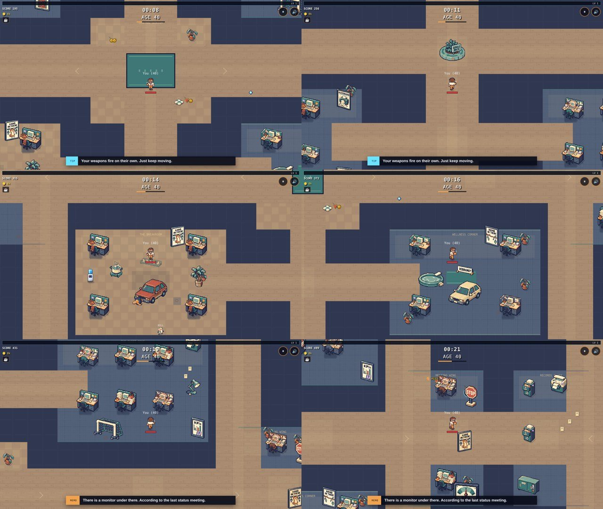
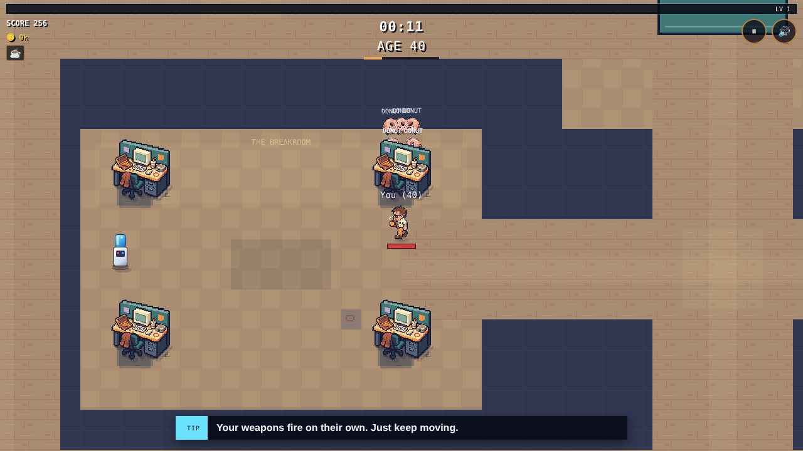
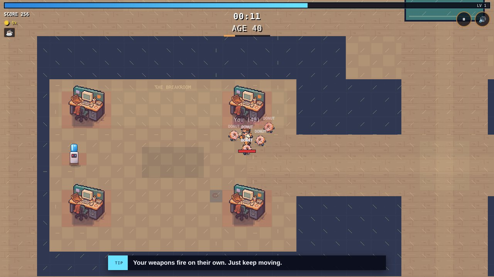
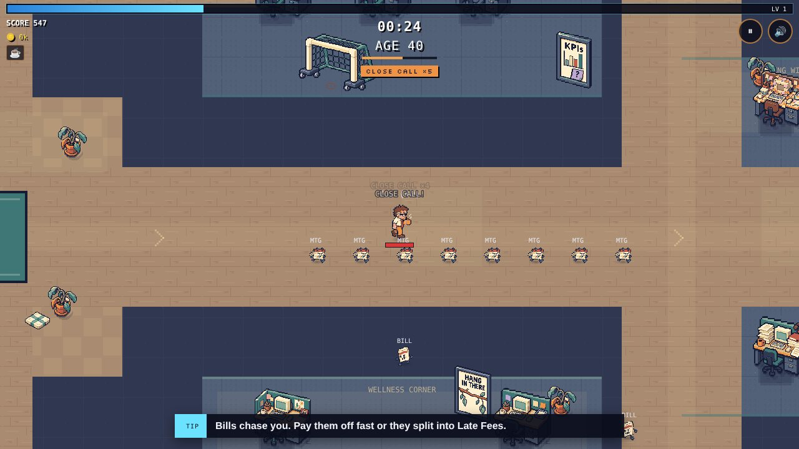
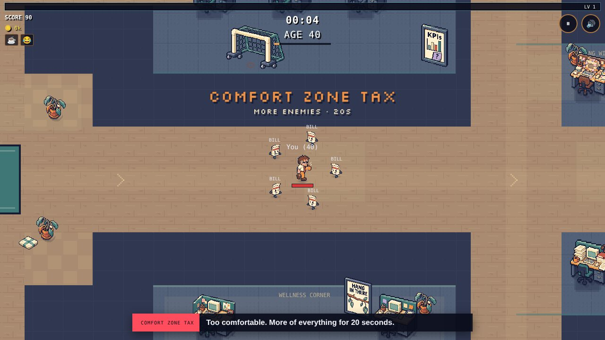

A week ago my office was a hallway. A long, beige, very professional hallway, with a couple of desks and the same three plants on a loop. It looked like a place where nothing has ever happened.
Now there's a car parked in the break room with a wheel boot on it. The sign says it's Dave's idea.
The office got jokes
I sent ChatGPT my list of things that are funny about office life (KPIs, "let's put that in the parking lot," motivational posters that have given up) and asked for them to become actual objects. Corporate slang, taken literally.

There's a traffic roundabout in the hallway that says CIRCLE BACK. A gauge on the wall stuck on MEH. A kiddie pool with a diving board for deep dives. A pot on a hot plate that is, yes, boiling a tiny ocean. And a framed sign that says KPIs, with a sticky note underneath: "What the hell is a KPI again?"1The full joke pops up at the bottom of the screen the first time you walk past each one. Once per run, so you aren't reading the same memo every lap.
Then the enemies got smarter
All that furniture created a problem I didn't see coming. My enemies only knew one move: walk straight at you. Put a desk in the way and they'd walk into it and just... stay there. Like a Roomba that has accepted its fate.

I could stand behind a cubicle and the entire swarm would politely wait on the other side. That's not a game. That's a waiting room.
The fix is something called a flow field, and it's one of my favorite things I've learned so far. Instead of every enemy figuring out its own route, the game figures it out once, from where you are standing, and writes "steps to reach you" on every square of the floor. Each enemy just walks toward a smaller number.
// Flood outward from the player, one step at a time.
// Every open floor cell gets a number: how many steps to reach you.
while (n > 0) {
const i = pop(), d = dist[i];
for (const [dx, dy, cost] of NEIGHBORS) {
const j = neighborOf(i, dx, dy);
if (blocked[j]) continue; // desks, cars, the kiddie pool
if (d + cost < dist[j]) { dist[j] = d + cost; push(j, d + cost); }
}
}
One flood, a few times a second, and three hundred enemies all know how to get around the desk. In my test, a group of donuts behind a desk reached me zero times with the old code. With the flow field, they were on me in two seconds.2It also means enemies can't spawn inside furniture anymore, which was happening. Bills were being born inside filing cabinets. Honestly, relatable.

Close Calls
Once the enemies were smart, I wanted dodging them to feel good. Grok designed a whole system for it (seriously, its spec was 500 lines), and I built it: when something heading right at you misses by a hair, you get a Close Call. A little XP, a quick burst of speed, and a streak meter that climbs from CLOSE CALL to SIDE-STEP to OUT OF OFFICE to PERFORMANCE EXCEEDED.

The popups are my favorite part: "Not today, autopay." "Left it on read." "HR saw nothing."
And there was a lesson in building it. The design measured "close" using the player's size, 32 pixels. But the box the game actually uses to decide if you got hit is bigger, 48 by 52. So every "near miss" was secretly a hit. The test caught it on the first try. What you see isn't always what collides.
Real people played it
This is the part that got me. People actually played this week and told me what was wrong.
Ben said the game moves so fast he couldn't read the messages at the bottom of the screen. He was right. Now the important stuff (a boss showing up, the Comfort Zone Tax, power-ups) flashes in big letters right above your character.

T.J. said Dad Joke was useless, because you basically had to let enemies hug you for it to work. Also right. Now everything inside the groan circle stops to cringe and staggers backward. It buys you room instead of costing you health. Which, as any dad will tell you, is what a good joke is supposed to do.
I also started counting (anonymously) how long runs last and how far people get, so I can balance with real numbers instead of my own thumbs. So far, more than a dozen people have put their names on the leaderboard, and plenty more have played without one.3No names, no tracking cookies. Just run length, age reached and what got you. There's a note on the About page if you want the details.
Next up
ChatGPT is building the first piece of the new office: a real Lobby and Bullpen, with doors that unlock as you get older, like promotions. The Executive Wing opens at 55. Of course it does.
If you played this week, thank you. If you haven't, go see if you can make it to OUT OF OFFICE. And come tell me about it in the Discord.